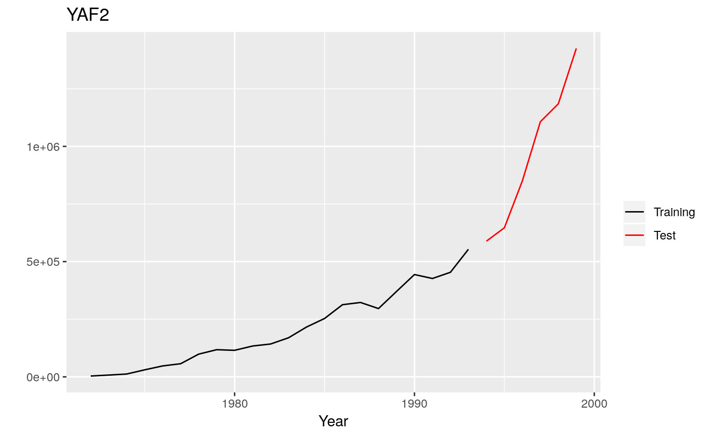

The R package Mcomp contains the 1001 time series from the M-competition (Makridakis et al. 1982) and the 3003 time series from the IJF-M3 competition (Makridakis and Hibon, 2000). See also the tscompdata package.
Installation
You can install the stable version from CRAN.
pak::pak("Mcomp")You can install the development version from Github
# install.packages("devtools")
pak::pak("robjhyndman/Mcomp")Usage
library(Mcomp)
#> Loading required package: forecast
#> Registered S3 method overwritten by 'quantmod':
#> method from
#> as.zoo.data.frame zoo
library(ggplot2)
M1
#> M-Competition data: 1001 time series
#>
#> Type of data
#> Period DEMOGR INDUST MACRO1 MACRO2 MICRO1 MICRO2 MICRO3 Total
#> MONTHLY 75 183 64 92 10 89 104 617
#> QUARTERLY 39 18 45 59 5 21 16 203
#> YEARLY 30 35 30 29 16 29 12 181
#> Total 144 236 139 180 31 139 132 1001
autoplot(M1$YAF2)
subset(M1, "monthly")
#> M-Competition data: 617 MONTHLY time series
#>
#> Type of data
#> Period DEMOGR INDUST MACRO1 MACRO2 MICRO1 MICRO2 MICRO3
#> MONTHLY 75 183 64 92 10 89 104